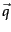
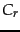
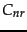
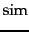
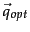

Next: The #rocchio71### algorithm.
Up: The Rocchio algorithm for
Previous: The Rocchio algorithm for
Contents
Index
We want to find a query
vector, denoted as ,
that maximizes similarity with relevant documents while minimizing
similarity with nonrelevant documents. If  is the set of
relevant documents and  is the set of nonrelevant documents,
then we wish to find:![[*]](../icons/footnote.png)
where  is defined as in Equation 24.
Under cosine similarity, the optimal query vector  for separating the relevant and nonrelevant documents is:
That is, the optimal query is the vector difference between
the centroids of the relevant and nonrelevant documents; see Figure 9.3 . However, this observation is not terribly useful, precisely because the full set of relevant documents is
not known: it is what we want to find.
© 2008 Cambridge University Press
This is an automatically generated page. In case of formatting errors you may want to look at the PDF edition of the book.
2009-04-07